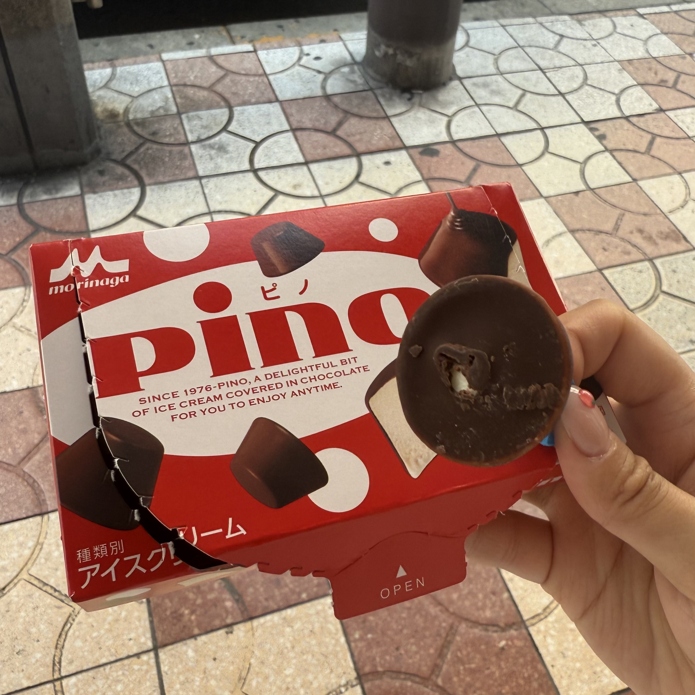
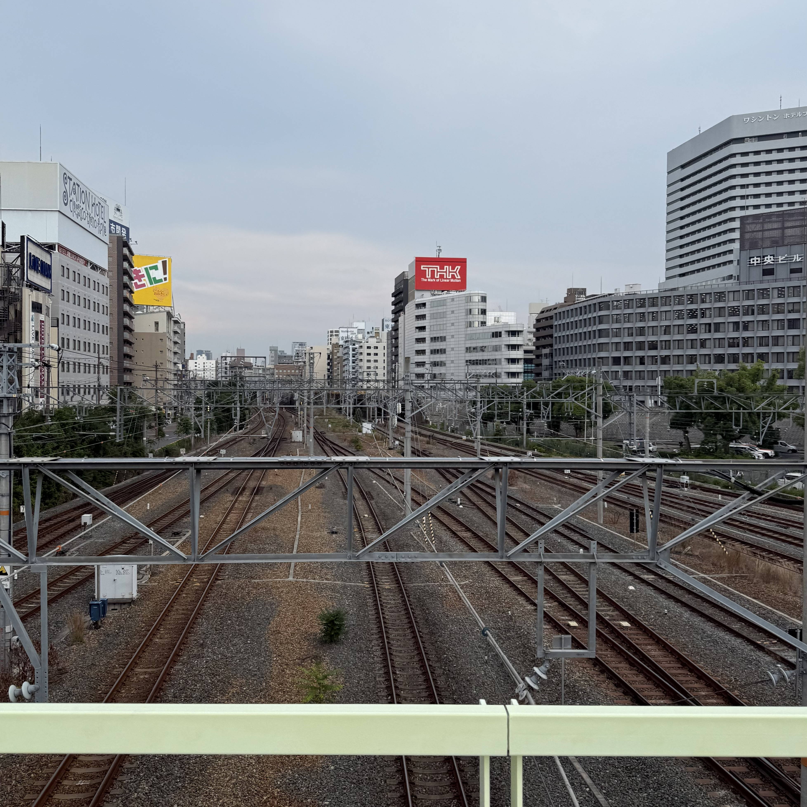
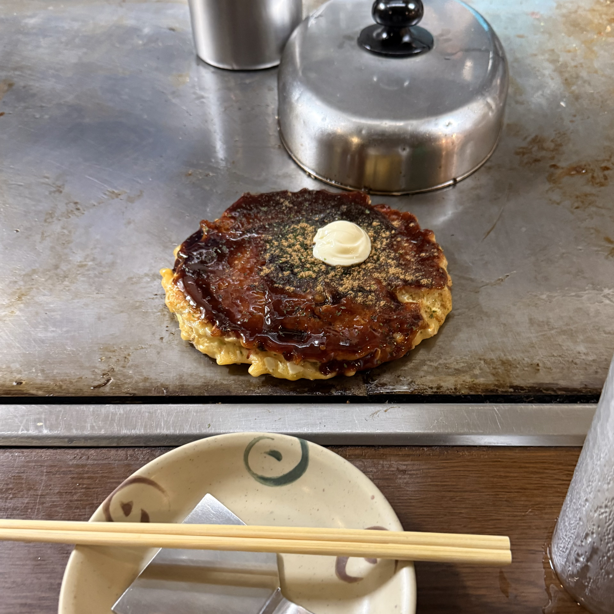
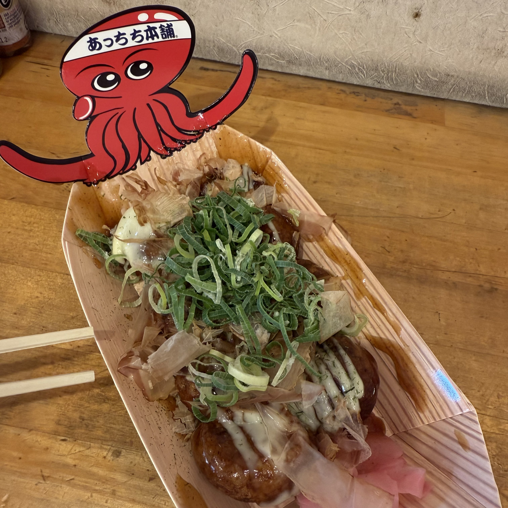
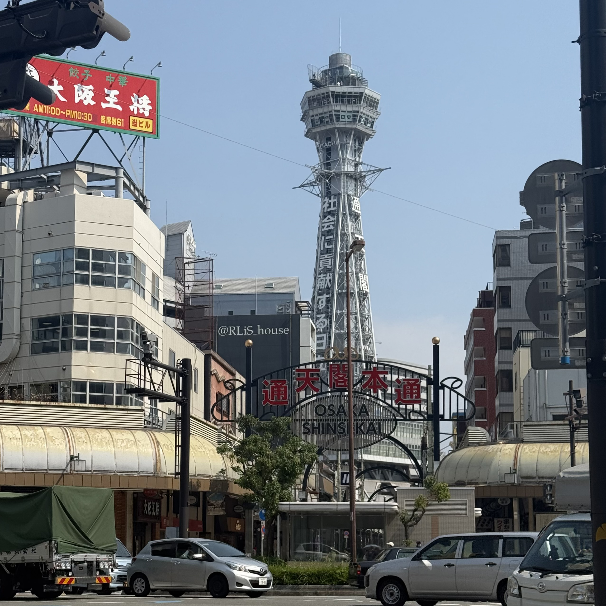
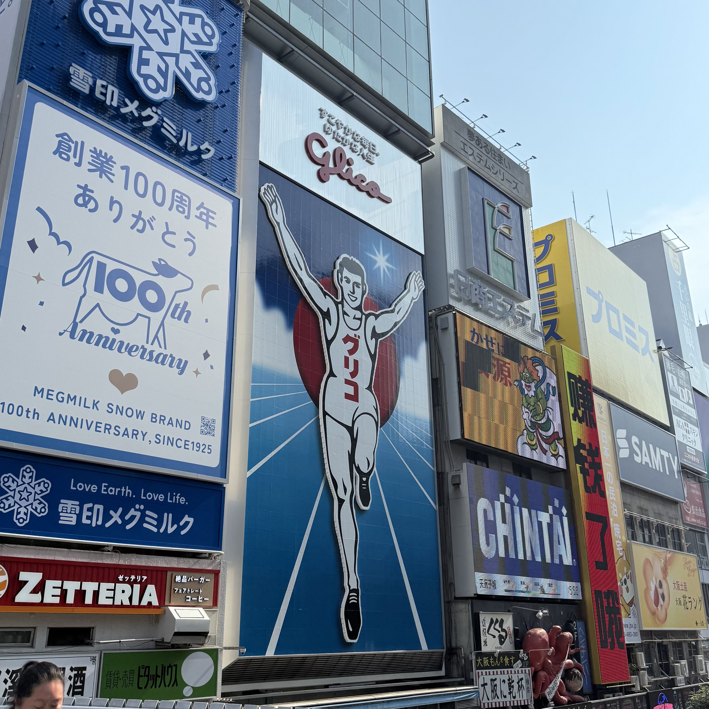
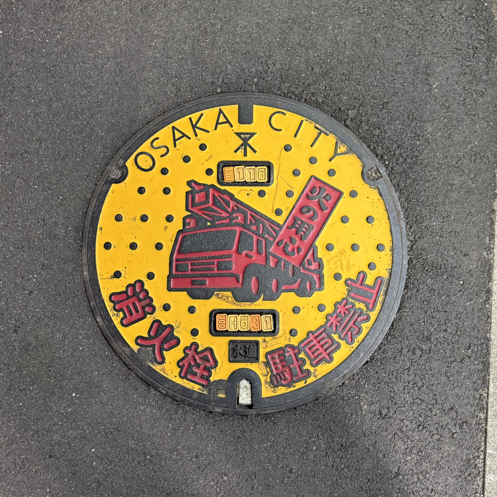

After the first night in Osaka, I went to 'Mugen Ramen' for brunch. It was early for a heavy meal, but I had to try. As dessert, I had the 'Pino' ice cream and this cooled me down from the heat of Osaka.

Japan, Osaka 🇯🇵 🍜


I checked out of the first hotel and took the train to Osaka, Japan. It was only an hour ride and on the way, I felt like a real Japanese using public transportation to a destination. I really enjoyed this feeling because I always wanted to live in Japan. For late lunch, I had 'okonomiyaki' which is a iconic food local to Osaka.
After the first night in Osaka, I went to 'Mugen Ramen' for brunch. It was early for a heavy meal, but I had to try. As dessert, I had the 'Pino' ice cream and this cooled me down from the heat of Osaka.

Next, I walked in the heat to 'Shinsekai' and had 'Takoyaki' which is also another iconic food in Osaka. Even though it was a steaming ball, I liked it. After filling up my energy, I moved to another iconic travel spot 'Glico-san'. Honestly, I don't know the story to it but this was a photo spot.





These two images above of circles are sewer gates near my hotel in Osaka. I thought it was cool that they decorate these.